AP3: Réalisation d'un site de vente en ligne
Objectif
J'ai eu pour mission de concevoir un site internet de vente en ligne pour l'entreprise fictive ALL4SPORT. Ainsi le site doit avoir plusieurs fonctionnalités:
- - Faire apparaître les articles sur le site avec pour chacuns leurs pages produits.
- - Localiser les articles pour afficher pour quel entrepôts et magasins les articles sont disponibles
- - Permettre à l'utilisateur de créer un compte client et de se connecter avec pour réaliser ses achats en mettant les produits dans son panier.
Ainsi pour stocker toute ces informations il à fallu réaliser une base de donnée et utiliser le langage PHP pour que le site codé et la base de donnée réalisé puisse échanger entre-elles.
La réalisation de la base de données
Je me suis chargé, comme pour l'AP2, de réaliser une base de donnée afin que le site puisse faire apparaître les articles de manière dynamique en s'appuyant sur ceux enregistré dans la bdd.
La difficulté avec ce projet c'est que la base de donnée à dû être complexe en vu du nombre conséquent d'information à stocker. Pour chaque article vendu sur le site il fallait renseigner ces informations:
- - La référence du produit
- - Le nom du fournisseur
- - Le rayon dans lequel est stocké le produit
- - Son coût unitaire HT (soit le coût d'achat)
- - La description du produit
- - La quantité en stock disponible sur le site
- - La quantité en stock pour chaque magasin
- - Le où les différents lieux où l'article est stocké (magasin ou entrepôt) exprimé par le nom de la ville.
Pour chaque compte client il fallait également renseigner toute ces informations:
- - Le Code Client: Trois lettres puis 8 chiffres auto-incrémenté
- - le Nom et Prénom
- - L'Email
- - Le numéro de Téléphone
- - La Date de Naissance
- - Le Nombre enfants (optionnel)
- - L'Age enfants (optionnel)
- - La Liste Sport Pratiqués
- - L'Historique des achats
- - La Date du dernier achat
Voici donc les captures des différents travaux effectués pour chaque étape de la conception de la bdd (je vous renvoie vers l'AP2 si vous voulez avoir une description plus avancé de chaque partie).
Première étape: Réalisation du Dictionnaire de données
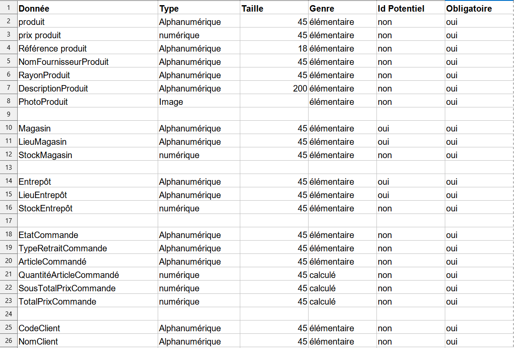Seconde étape: Réalisation du MCD
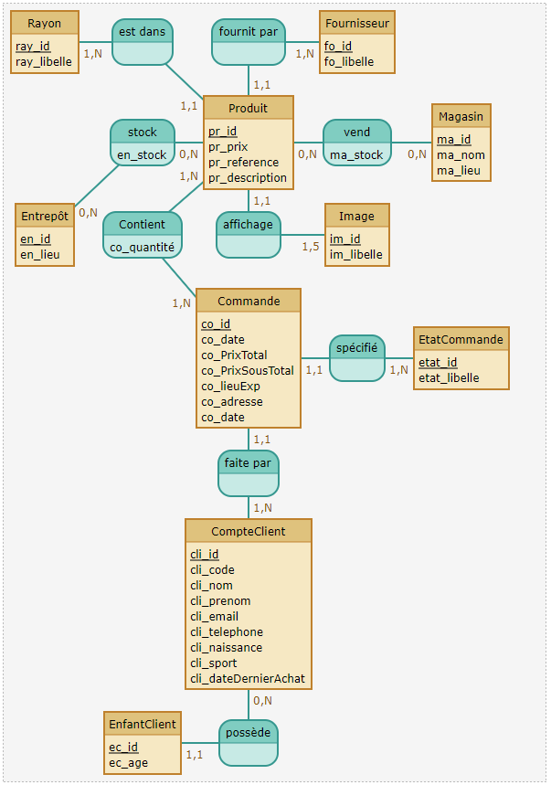Dernière étape: La construction de la BDD
Voici l'affichage des noms de toutes les tables de la base de donnée:
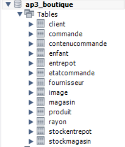Voici l'affichage de tout les champs de la table produit:
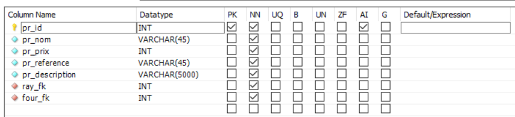Voici l'affichage des données contenu dans la table produit:
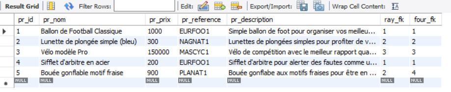Réalisation du site en PHP
Avec une base de données établi correctement, je suis passé à la réalisation du code en PHP pour réaliser les fonctions permettant d'intéragir avec la base de donnée. L'apparence n'a pas pu être correctement faite de part une mauvaise répartitions du temps et les problèmes rencontrés au sein du groupe.
Afin de réaliser le site, j'ai respecté la norme de réalisation MVC (Model View Controller) qui consiste à répartir les différentes fonctions du site en différent répertoire. Ainsi le répertoire "View" regroupe toute les fonctions dédiés à l'apparence du site, le répertoire "Model" est dédié aux fonctions intéragissant avec la base de données et le répertoire "Controller" contient les fichiers permettant d'appeler les fonctions des deux autres répertoires pour assembler le site pour l'utilisateur.
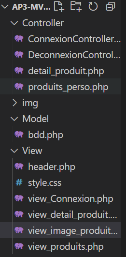Le fichier PHP contenu dans le répertoire model contient toute les différentes fonctions permettant d'appeler la base de données pour récupérer des informations (par exemple afficher les détails de l'article correspondant à l'image que sélectionne l'utilisateur, récupérer les identifiants des utilisateurs pour comparer que ceux entrer par l'utilisateur correspondent bien à un compte existant ect...).
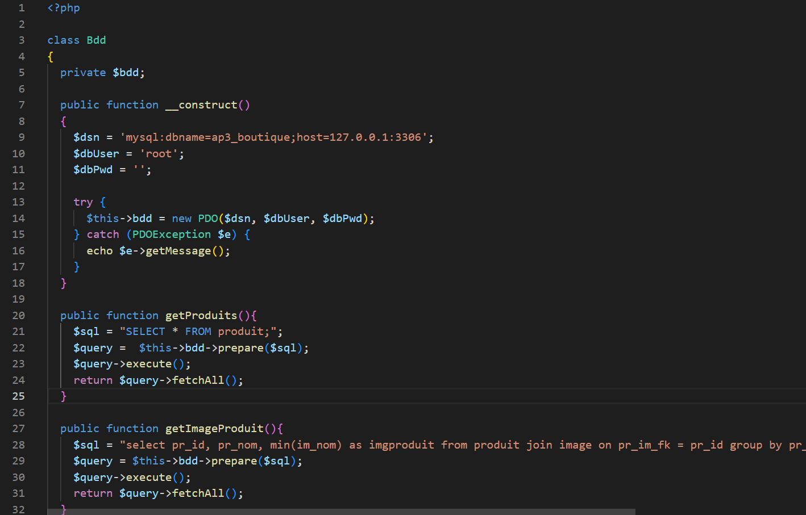Vous pouvez voir ci-dessous une visualisation du code PHP correspondant au Controller de la page de connexion des utilisateurs. Vous pouvez constater que le controller récupère le "model" et la "view" dont il à besoin pour faire apparaître la page et lui permettre de fonctionner correctement.
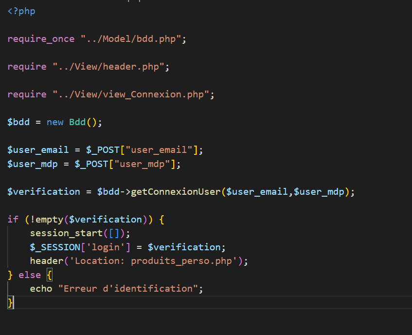Et voici à quoi ressemble la page de connexion (Les erreurs d'index sont due au fait que les champs ne sont pas remplis et ne devraient pas apparaître):
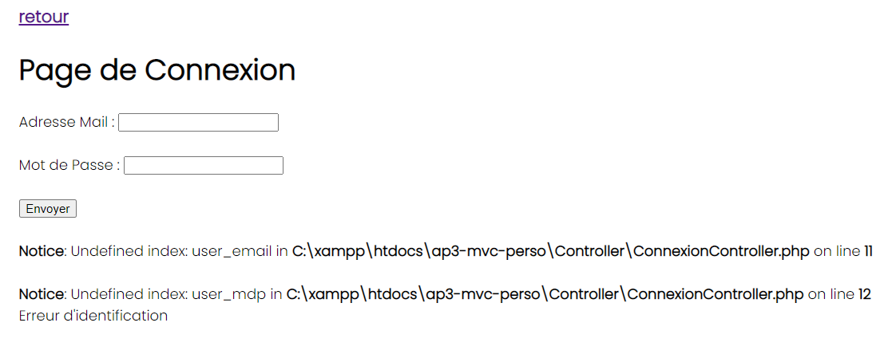Voici également le controller de la page d'affichage des détails du produits:
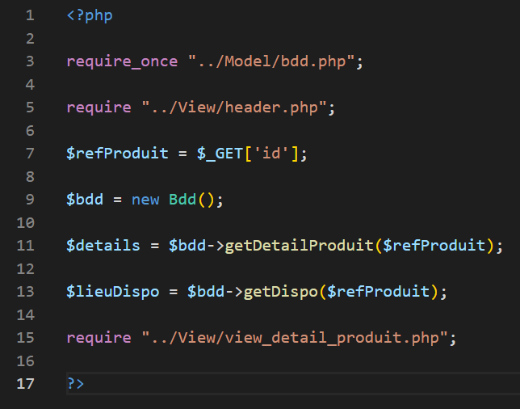Et ici à quoi ressemble la page du détail des produits. Cette page est donc toujours la même mais les données changent selon l'article sélectionné et se que renvoie la base de données depuis le model au controller:
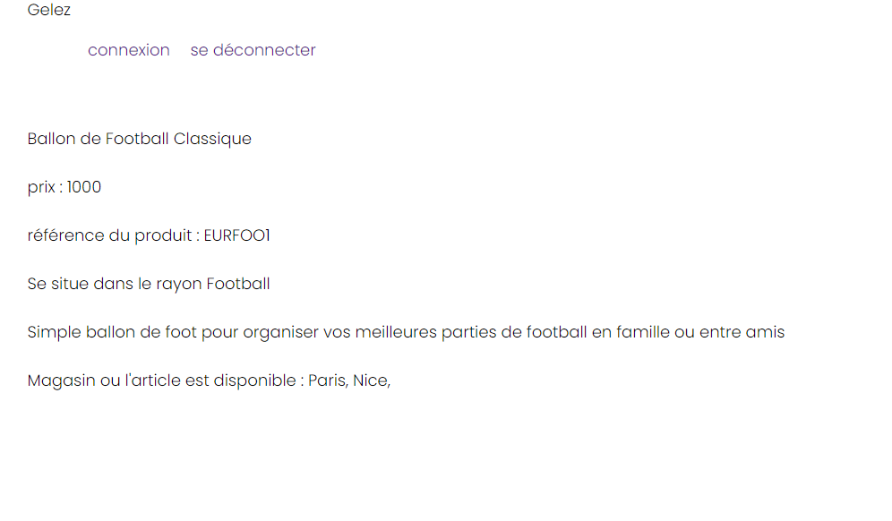